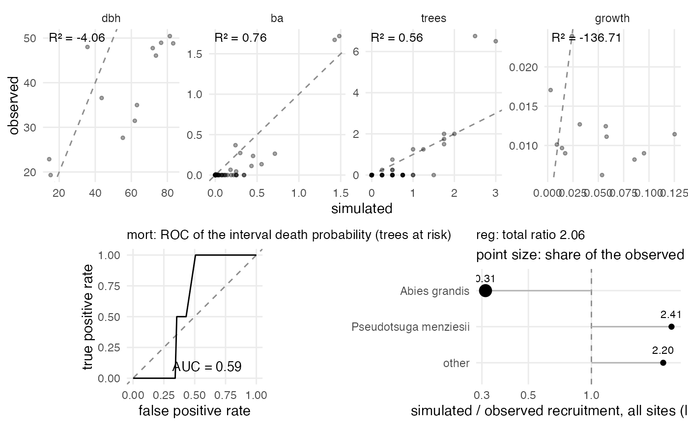
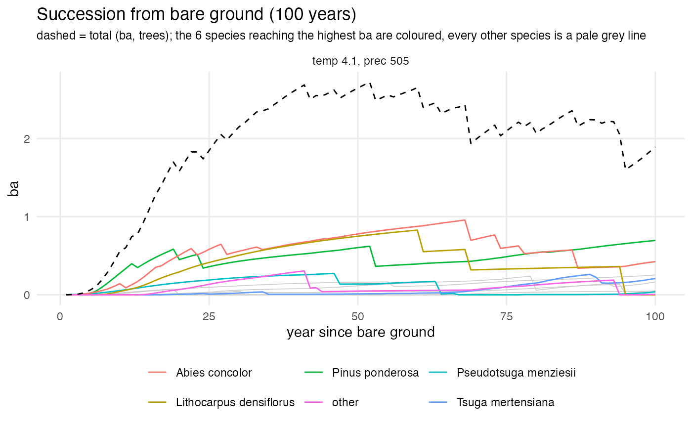
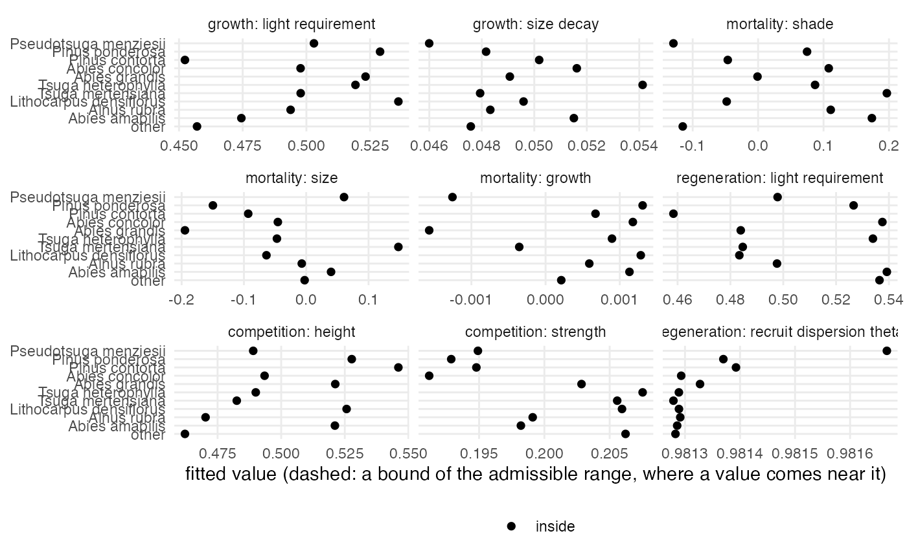

FINN is a differentiable forest gap model. A forest is represented as cohorts of same-species, same-size trees that are updated each timestep by four demographic processes — competition, growth, mortality and regeneration. Each process can be a mechanistic function, a neural network, or a mixture of the two, and the whole model is calibrated end-to-end by gradient descent through the simulation (implemented in torch).
Getting started
The functions in the order of a typical analysis:
Prepare the data.
makeObsData(),resolveSiteIDs()andmakeInitCohorts()turn a raw tree list into FINN's input tables: the observations, the environment of every year and the initial cohorts (finn_data).Build the model.
finn()assembles one process per component (growth, mortality, regeneration, competition), each built withcreateProcess()(mechanistic, with a linear or neural-network response to the environment) orcreateHybrid()(a neural network).Fit it.
fit()estimates all processes jointly against all observed responses; its argumentholdoutevaluates the model right after the fit.Evaluate it.
evaluate()compares simulations with the observations of the training data and a holdout and returns the result (also kept in the model);comparePlot()draws observed against simulated, as a scatter page, a heatmap per species or a time series;summary.finn_class()shows the skill, the convergence of the fit and the effects of the environment.Look inside.
plot.finn_class()draws the fitted parameters,ALE()the effects of the environment, also of a neural network.Simulate.
simulateForest()runs the model forward, also from bare ground (bare_ground = TRUE);plot.finn_simulation()draws the result.
The vignettes give a guided tour: browseVignettes("FINN").
Author
Maintainer: Yannek Käber y.kaeber@posteo.de (ORCID)
Authors:
Maximilian Pichler maximilian.pichler@biologie.uni-regensburg.de (ORCID)
Examples
library(data.table)
# the bundled Oregon FIA data: observations, environment and initial trees
Nsp <- max(fia_obs_dt$species)
train <- 1:4; hold <- 5:6
init <- makeInitCohorts(fia_init_trees[siteID %in% train], Nspecies = Nsp)
# build the model: the environmental responses as linear functions of
# temperature and precipitation
FINN.seed(1)
m <- finn(N_species = Nsp, recruits_dbh = 12.9,
growth_process = createProcess(~ temp + prec, growth),
mortality_process = createProcess(~ temp + prec, mortality),
regeneration_process = createProcess(~ temp + prec, regeneration_capped))
# fit all processes jointly (a real calibration runs hundreds of epochs)
fit(m, data = fia_obs_dt[siteID %in% train], env = fia_env_dt[siteID %in% train],
init_cohort = init, epochs = 3L, patch_size = 0.06, plot_progress = FALSE)
#> ℹ weights: intercept-only baseline x your vector (dbh=0.00187, ba=15.1, trees=0.664, growth=2.98e+04, mortality=19.9, regeneration=0.664)
#> ℹ share of the objective at the intercept-only baseline (scaled): dbh=17%, ba=17%, trees=17%, growth=17%, mortality=17%, regeneration=17%
# evaluate on two sites the model has not seen, with a bare-ground run
ev <- evaluate(m, holdout = list(
data = fia_obs_dt[siteID %in% hold], env = fia_env_dt[siteID %in% hold],
init_cohort = makeInitCohorts(fia_init_trees[siteID %in% hold], Nspecies = Nsp)),
bare_ground = TRUE, years = 100)
#> obsDF2arrays(): siteIDs are not 1:2; the site dimension follows their sorted order (kept as attribute "site_ids").
plot(ev) # observed against simulated

plot(ev, type = "bare_ground") # succession from an empty stand

# skill, convergence and environmental effects; the fitted parameters
summary(m)
#> FINN model summary
#> ==================
#>
#> ## Skill (observed vs simulated, aggregated as fit() scores)
#>
#> Training data:
#> response R2 correlation RMSE bias pred/obs n AUC deaths pred/obs
#> dbh -0.5581 0.4487 28.8675 5.2645 1.09 22 NA NA
#> ba 0.0847 0.7517 0.2464 0.0924 1.86 88 NA NA
#> trees 0.8758 0.9590 0.6716 0.1108 1.18 88 NA NA
#> growth -52.2177 0.2024 0.0514 0.0302 5.13 21 NA NA
#> mort -1.1115 0.1850 0.0164 0.0121 2.00 21 0.473 2.08
#> reg -0.4564 0.0807 5.2493 2.0259 2.71 88 NA NA
#>
#> Holdout:
#> response R2 correlation RMSE bias pred/obs n AUC
#> dbh -4.057 0.7653 24.1840 17.7573 1.46 12 NA
#> ba 0.765 0.9101 0.1727 0.0896 1.80 44 NA
#> trees 0.560 0.8228 0.9557 0.1080 1.19 44 NA
#> growth -136.713 -0.3245 0.0528 0.0361 4.07 12 NA
#> mort -0.419 -0.0885 0.0222 0.0117 5.99 12 0.592
#> reg -0.244 -0.0880 8.4832 1.8100 2.06 44 NA
#> deaths pred/obs
#> NA
#> NA
#> NA
#> NA
#> 6.66
#> NA
#>
#> ## Convergence
#> loss: fewer than 50 + 1 epochs recorded
#>
#> Parameters: how much they moved over the last 2 epochs (from the parameters of every epoch).
#> The change is the size of the step the values took, as a percentage of the size of the values:
#> 100 x |values now - values then| / |values then|, over all species of a parameter (or all weights
#> of a network layer). 1 % means the values moved by about a hundredth of their size.
#> process part moved most change
#> growth environmental response nn_growth.0.weight 4.44 %
#> mortality environmental response nn_mortality.0.weight 0.76 %
#> regeneration environmental response nn_regeneration.0.weight 5.84 %
#> regeneration recruit dispersion par_theta_recruits_raw 3.61 %
#> regeneration recruitment cap reg_logK 1.88 %
#>
#> ## Bare ground (mean of the last tenth of the run)
#> siteID total_ba leading_species leading_share years
#> 1 1.91 Pinus ponderosa 0.345 100
#>
#> ## Environment
#>
#> ### GROWTH
#>
#> Analytical ALE importance (rate-normalised) (species in columns):
#> variable Pseudotsuga menziesii Pinus ponderosa Pinus contorta Abies concolor
#> temp 0.123 0.0231 0.677 0.000375
#> prec 0.169 0.1102 0.130 0.067093
#> Abies grandis Tsuga heterophylla Tsuga mertensiana Lithocarpus densiflorus
#> 0.0568 0.00112 0.0816 0.19309
#> 0.0187 0.25264 0.0183 0.00115
#> Alnus rubra Abies amabilis other
#> 0.04310 0.188 0.03352
#> 0.00523 0.151 0.00288
#>
#> Average conditional effects (mean; species in columns):
#> variable Pseudotsuga menziesii Pinus ponderosa Pinus contorta Abies concolor
#> temp -0.01617 -0.00877 0.0438 0.00345
#> prec -0.00877 0.01927 -0.0201 -0.03841
#> Abies grandis Tsuga heterophylla Tsuga mertensiana Lithocarpus densiflorus
#> -0.01316 -0.00354 0.0361 0.05389
#> 0.00666 -0.05647 -0.0178 -0.00465
#> Alnus rubra Abies amabilis other
#> 0.0280 0.0361 -0.0349
#> 0.0158 0.0323 -0.0066
#>
#> ### MORTALITY
#>
#> Analytical ALE importance (rate-normalised) (species in columns):
#> variable Pseudotsuga menziesii Pinus ponderosa Pinus contorta Abies concolor
#> temp 0.428 0.259 1.45 0.0497
#> prec 0.413 0.260 1.42 0.2158
#> Abies grandis Tsuga heterophylla Tsuga mertensiana Lithocarpus densiflorus
#> 0.221 0.193 0.339 0.435
#> 0.236 0.135 0.116 0.449
#> Alnus rubra Abies amabilis other
#> 0.442 0.411427 0.296
#> 0.255 0.000205 0.289
#>
#> Average conditional effects (mean; species in columns):
#> variable Pseudotsuga menziesii Pinus ponderosa Pinus contorta Abies concolor
#> temp 0.000545 -0.000523 0.000519 0.000238
#> prec -0.000545 0.000522 -0.000517 -0.000496
#> Abies grandis Tsuga heterophylla Tsuga mertensiana Lithocarpus densiflorus
#> 0.000499 -0.000342 -0.00062 0.000491
#> -0.000499 0.000321 -0.00036 -0.000505
#> Alnus rubra Abies amabilis other
#> -0.000577 -6.66e-04 -0.000533
#> 0.000637 -1.49e-05 0.000526
#>
#> ### REGENERATION
#>
#> Analytical ALE importance (rate-normalised) (species in columns):
#> variable Pseudotsuga menziesii Pinus ponderosa Pinus contorta Abies concolor
#> prec 0.2396 0.0146 7.51e-02 0.0998
#> temp 0.0114 0.0964 1.35e-05 0.0626
#> Abies grandis Tsuga heterophylla Tsuga mertensiana Lithocarpus densiflorus
#> 0.1568 8.18e-03 0.362 0.1163
#> 0.0656 8.61e-05 0.142 0.0051
#> Alnus rubra Abies amabilis other
#> 0.00929 0.0986 0.0743
#> 0.13930 0.1223 0.0104
#>
#> Average conditional effects (mean; species in columns):
#> variable Pseudotsuga menziesii Pinus ponderosa Pinus contorta Abies concolor
#> prec -0.1286 -0.0211 0.07848 0.0752
#> temp 0.0314 0.0569 0.00108 0.0605
#> Abies grandis Tsuga heterophylla Tsuga mertensiana Lithocarpus densiflorus
#> -0.0818 -0.01317 -0.166 0.1097
#> 0.0567 0.00152 -0.124 -0.0238
#> Alnus rubra Abies amabilis other
#> 0.028 -0.0742 -0.0705
#> -0.124 -0.1011 0.0292
plot(m)
